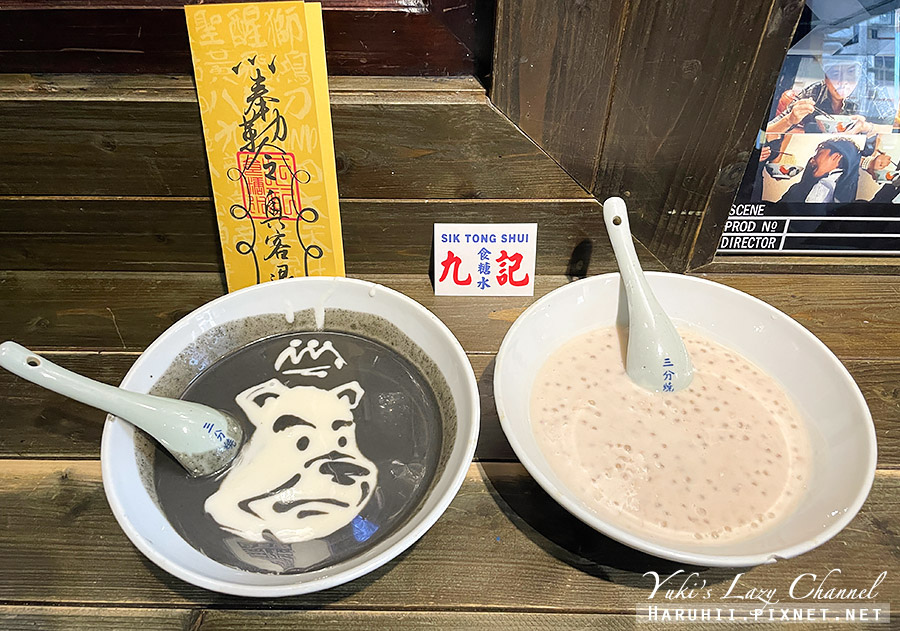

舒服蕾
九記食糖水
朵玫絲甜點森林
心得分享

芝麻糊香氣十足，濃潤順口帶著微微冰涼，淺淺的杏仁香氣一掃小時候超濃烈杏仁茶的壞印象。
整體甜度適中不會太過，喝起來很舒服，而且本來以為好像不多，沒想到喝完一碗也有點飽足感耶。
九記食糖水除了店內濃厚的香港風格外，老闆運用甜品的創意手繪更是必看 老闆信手捻來用芝麻糊與杏仁糊就畫出太極圖樣、人臉等等，實在有趣～
首頁
舒服蕾
朵玫絲甜點森林
心得分享